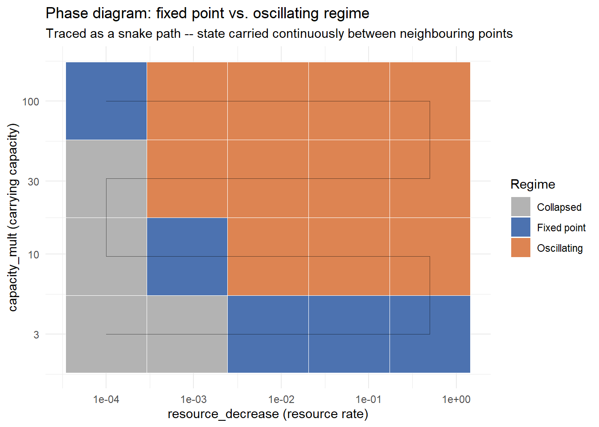
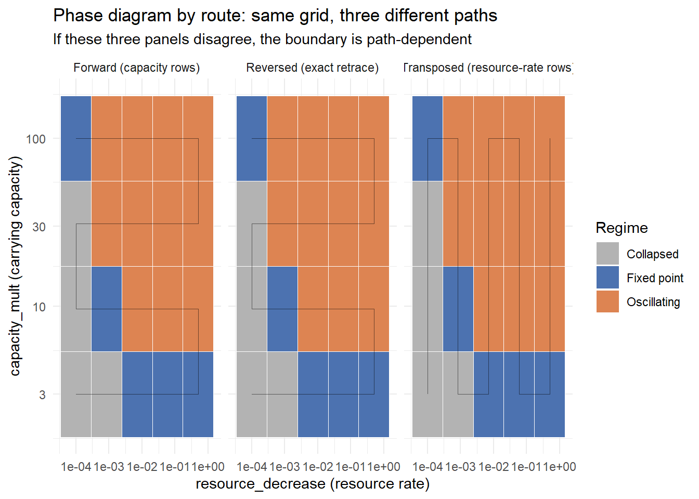
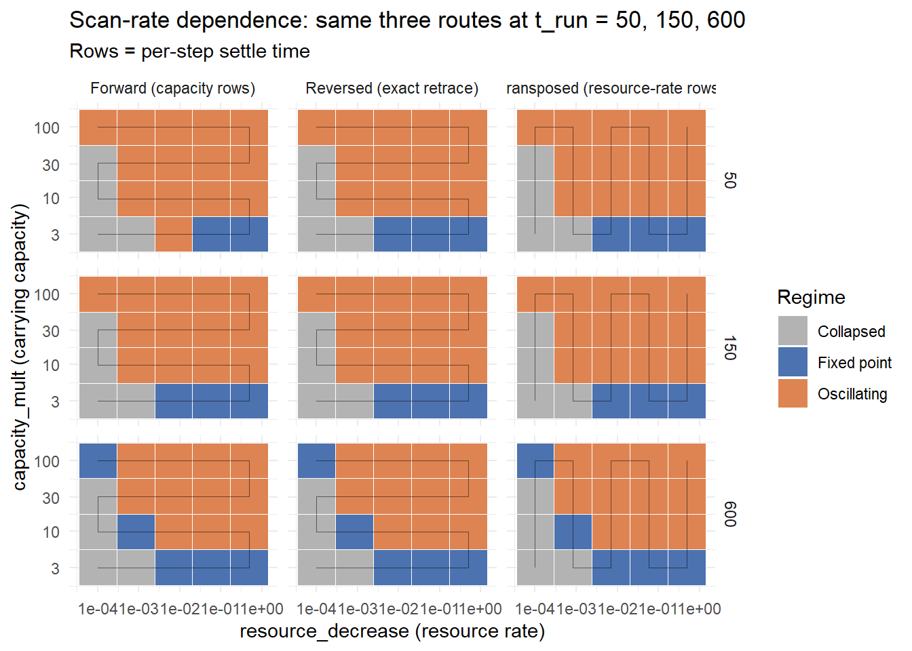
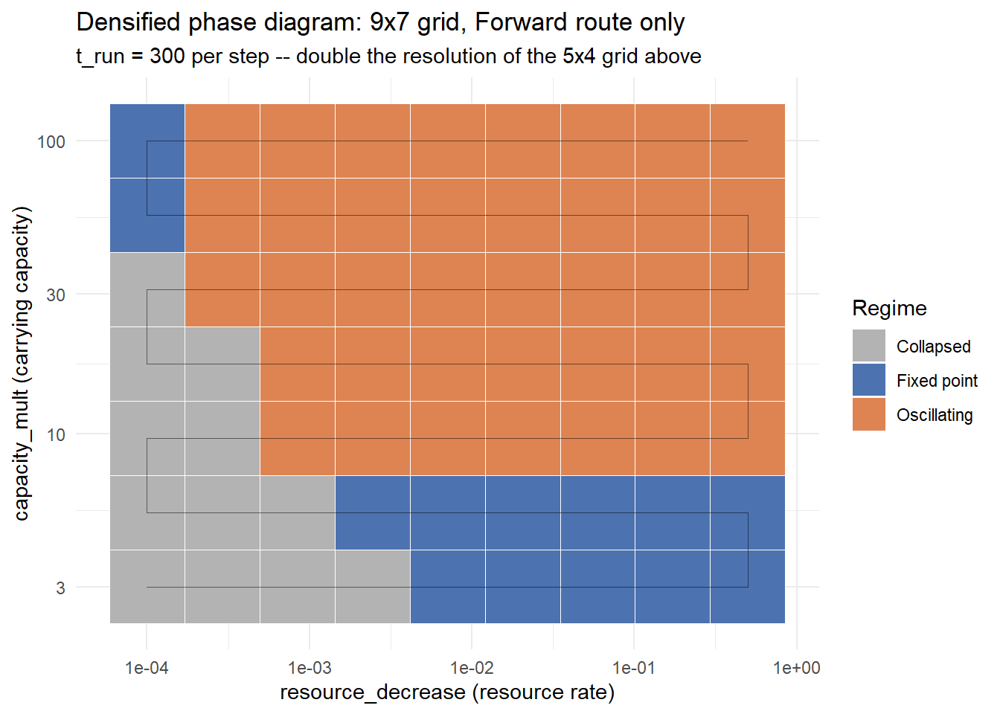
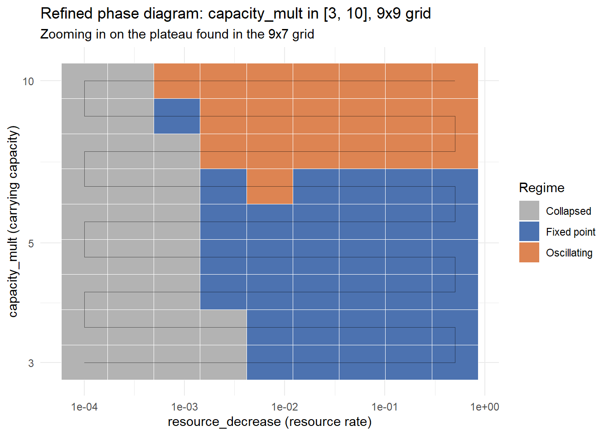
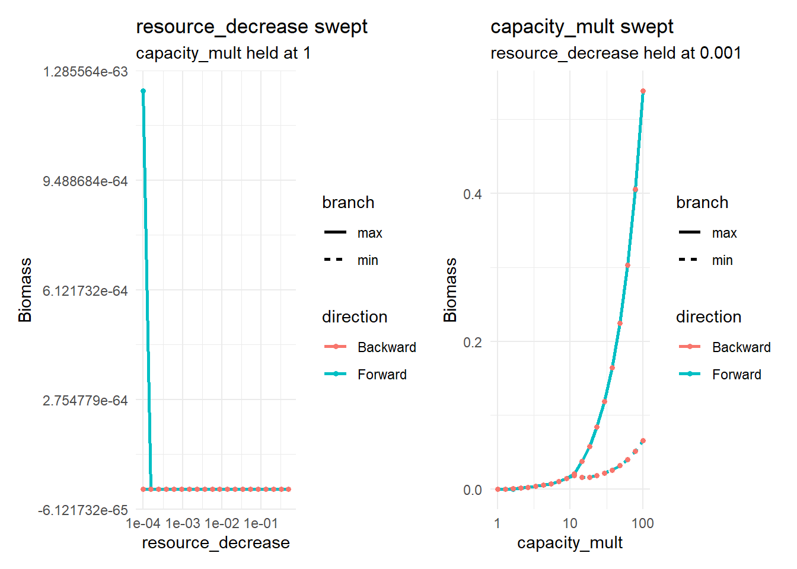
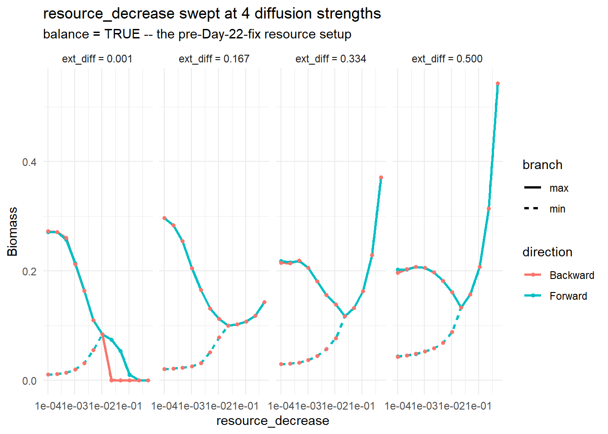

Code
# Same threshold as Day 22's baseline sweep -- filters out numerical noise
# masquerading as a viable population. Defined here, not inherited from
# 22_experiments.R's session state, so this file runs standalone.
MIN_VIABLE_BIOMASS <- 1e-2Samia
July 8, 2026
Running 23_experiments.R fresh came back with:
Error in `mutate()`:
ℹ In argument: `collapsed = mean_bm < MIN_VIABLE_BIOMASS`.
Caused by error:
! object 'MIN_VIABLE_BIOMASS' not foundMIN_VIABLE_BIOMASS - the biomass floor introduced on Day 22 to stop numerically-collapsed populations from winning the “most oscillatory” ranking on floating-point noise - was never actually defined in 23_experiments.R. It only ever worked because 22_experiments.R’s session was still open in the same RStudio instance. Source 23_experiments.R alone, in a fresh session, and it has nothing to check the floor against.
The fix is one line, added where the constant is actually needed:
Every script since Day 20 redefines make_second_order_params() from scratch specifically so each day’s file is self-contained, but that discipline slipped for this one constant.
make_second_order_params_kr() is a function where carrying capacity and resource rate set independently, both as multipliers on mizer’s own kappa/lambda-derived defaults, balance = FALSE so neither gets silently recomputed from the other ,but instead, carries over unchanged from Day 22’s “take two”:
make_second_order_params_kr <- function(lambda = 2.05, resource_decrease = 0.001,
capacity_mult = 1, second_order = TRUE,
ext_diff = 0.00) {
a0 <- 100
kappa <- a0 * exp(-6.9 * (lambda - 1))
no_w <- round(log(66.5 / 0.0003) / 0.1)
params <- newSingleSpeciesParams(
species_name = "Anchovy",
w_min = 0.0003, w_max = 66.5, w_mat = 10,
no_w = no_w, lambda = lambda, kappa = kappa,
alpha = 0.1, gamma = 750, ks = 0
)
given_species_params(params)$D_ext <- ext_diff
params <- setBevertonHolt(params)
default_capacity <- getResourceCapacity(params)
r <- getResourceRate(params) * resource_decrease
cc <- default_capacity * capacity_mult
params <- setResource(params, resource_rate = r, resource_capacity = cc,
resource_dynamics = "resource_semichemostat",
balance = FALSE)
if (second_order) {
second_order_w(params) <- c(flux = "centred", bin_average = TRUE)
}
params
}Rather than sweeping resource_decrease independently at each capacity_mult row and then restarting from mizer’s default state every time, we instead make it so the whole grid gets traced as one continuous “snake” path, carrying the settled state from each point into its immediate neighbour, including across the row-to-row step:
run_snake_grid <- function(rd_grid, cc_grid, lambda = 2.05, t_run = 600) {
out <- vector("list", length(rd_grid) * length(cc_grid))
state_n <- NULL
state_npp <- NULL
k <- 1
for (j in seq_along(cc_grid)) {
rd_order <- if (j %% 2 == 1) rd_grid else rev(rd_grid)
for (rd in rd_order) {
p <- make_second_order_params_kr(lambda = lambda, resource_decrease = rd,
capacity_mult = cc_grid[j])
if (!is.null(state_n)) {
p@initial_n[] <- state_n
p@initial_n_pp[] <- state_npp
}
sim <- project(p, t_max = t_run, dt = 0.1, t_save = 0.5,
progress_bar = FALSE, effort = 0, method = "tr_bdf2")
bm <- getBiomass(sim)[, "Anchovy"]
tv <- as.numeric(names(bm))
late <- bm[tv > t_run * 0.6]
last <- dim(sim@n)[1]
state_n <- sim@n[last, , ]
state_npp <- sim@n_pp[last, ]
out[[k]] <- data.frame(resource_decrease = rd, capacity_mult = cc_grid[j],
max_bm = max(late), min_bm = min(late),
mean_bm = mean(late),
rel_amplitude = (max(late) - min(late)) / mean(late),
step = k)
k <- k + 1
}
}
bind_rows(out)
}
rd_grid_snake <- exp(seq(log(0.0001), log(0.5), length.out = 5))
cc_grid_snake <- exp(seq(log(3), log(100), length.out = 4))
snake_df <- run_snake_grid(rd_grid_snake, cc_grid_snake) %>%
arrange(step) %>%
mutate(collapsed = mean_bm < MIN_VIABLE_BIOMASS,
phase = case_when(
collapsed ~ "Collapsed",
rel_amplitude > 1e-2 ~ "Oscillating",
TRUE ~ "Fixed point"
))snake_plot_fwd <- ggplot(snake_df, aes(x = resource_decrease, y = capacity_mult)) +
geom_tile(aes(fill = phase), color = "white", linewidth = 0.3) +
geom_path(color = "black", linewidth = 0.3, alpha = 0.5) +
scale_x_log10() +
scale_y_log10() +
scale_fill_manual(values = c("Fixed point" = "#4C72B0",
"Oscillating" = "#DD8452",
"Collapsed" = "grey70")) +
labs(x = "resource_decrease (resource rate)",
y = "capacity_mult (carrying capacity)",
title = "Phase diagram: fixed point vs. oscillating regime",
subtitle = "Traced as a snake path -- state carried continuously between neighbouring points",
fill = "Regime") +
theme_minimal()
snake_plot_fwd
Three regions fall out of the 5x4 grid: Collapsed at low resource_decrease combined with low-to-mid capacity_mult, a Fixed point band along the diagonal, and Oscillating covering most of the rest. One easy-to-miss detail: the lowest resource_decrease column isn’t uniformly collapsed ; at capacity_mult = 100 it’s a Fixed point, not Collapsed, showing carrying capacity alone can rescue that corner even at the most depleted resource rate.
The point of tracing the grid at all is Day 22’s supercooling/superheating framing: if the phase boundary genuinely depends on history, different routes through the same grid should trace different boundaries. Three get compared: Forward (the snake above), Reversed (the exact retrace, walked backwards), and Transposed (capacity_mult swept within each resource_decrease row instead). The Reversed route is also what closes out Day 22’s parked item about rechecking Day 21’s backward-first bifurcation ordering against the capacity-aware setup: it’s the same “walk it backwards” idea, just now run against both parameters at once instead of resource_decrease alone.
build_path_capacity_rows <- function(rd_grid, cc_grid) {
path <- vector("list", length(rd_grid) * length(cc_grid))
k <- 1
for (j in seq_along(cc_grid)) {
rd_order <- if (j %% 2 == 1) rd_grid else rev(rd_grid)
for (rd in rd_order) {
path[[k]] <- data.frame(resource_decrease = rd, capacity_mult = cc_grid[j])
k <- k + 1
}
}
bind_rows(path)
}
build_path_rd_rows <- function(rd_grid, cc_grid) {
path <- vector("list", length(rd_grid) * length(cc_grid))
k <- 1
for (i in seq_along(rd_grid)) {
cc_order <- if (i %% 2 == 1) cc_grid else rev(cc_grid)
for (cc in cc_order) {
path[[k]] <- data.frame(resource_decrease = rd_grid[i], capacity_mult = cc)
k <- k + 1
}
}
bind_rows(path)
}
run_along_path <- function(path_df, lambda = 2.05, t_run = 600, label = "") {
state_n <- NULL
state_npp <- NULL
out <- vector("list", nrow(path_df))
for (i in seq_len(nrow(path_df))) {
rd <- path_df$resource_decrease[i]
cc <- path_df$capacity_mult[i]
p <- make_second_order_params_kr(lambda = lambda, resource_decrease = rd,
capacity_mult = cc)
if (!is.null(state_n)) {
p@initial_n[] <- state_n
p@initial_n_pp[] <- state_npp
}
sim <- project(p, t_max = t_run, dt = 0.1, t_save = 0.5,
progress_bar = FALSE, effort = 0, method = "tr_bdf2")
bm <- getBiomass(sim)[, "Anchovy"]
tv <- as.numeric(names(bm))
late <- bm[tv > t_run * 0.6]
last <- dim(sim@n)[1]
state_n <- sim@n[last, , ]
state_npp <- sim@n_pp[last, ]
out[[i]] <- data.frame(resource_decrease = rd, capacity_mult = cc,
max_bm = max(late), min_bm = min(late),
mean_bm = mean(late),
rel_amplitude = (max(late) - min(late)) / mean(late),
step = i, route = label)
}
bind_rows(out)
}
classify_phase <- function(mean_bm, rel_amplitude) {
case_when(
mean_bm < MIN_VIABLE_BIOMASS ~ "Collapsed",
rel_amplitude > 1e-2 ~ "Oscillating",
TRUE ~ "Fixed point"
)
}
path_fwd <- build_path_capacity_rows(rd_grid_snake, cc_grid_snake)
path_bwd <- path_fwd[rev(seq_len(nrow(path_fwd))), ]
path_transposed <- build_path_rd_rows(rd_grid_snake, cc_grid_snake)
routes_df <- bind_rows(
run_along_path(path_fwd, label = "Forward (capacity rows)"),
run_along_path(path_bwd, label = "Reversed (exact retrace)"),
run_along_path(path_transposed, label = "Transposed (resource-rate rows)")
) %>%
mutate(phase = classify_phase(mean_bm, rel_amplitude))routes_plot <- ggplot(routes_df, aes(x = resource_decrease, y = capacity_mult)) +
geom_tile(aes(fill = phase), color = "white", linewidth = 0.3) +
geom_path(color = "black", linewidth = 0.3, alpha = 0.5) +
scale_x_log10() +
scale_y_log10() +
scale_fill_manual(values = c("Fixed point" = "#4C72B0",
"Oscillating" = "#DD8452",
"Collapsed" = "grey70")) +
facet_wrap(~route) +
labs(x = "resource_decrease (resource rate)",
y = "capacity_mult (carrying capacity)",
title = "Phase diagram by route: same grid, three different paths",
subtitle = "If these three panels disagree, the boundary is path-dependent",
fill = "Regime") +
theme_minimal()
routes_plot
Checked numerically rather than by eye: zero of the 20 grid points disagree across all three routes, and where they agree the underlying mean_bm values agree to within a few percent almost everywhere (three cells agree to machine precision). A clean negative result for path-dependence, within this grid, which starts sampling at capacity_mult = 3. That qualifier turns out to matter later.
That “no path dependence” result came with three caveats: untested scan-rate dependence (t_run = 600 might just be long enough to relax away any real memory effect), no genuine perturbation test (every Fixed point cell was only ever approached from a settled neighbour, never actively kicked), and grid resolution (5x4 is coarse enough to hide a narrow band). All three get closed out.
The three-route comparison reruns at t_run = 50 and 150, reusing routes_df above as the t_run = 600 baseline rather than recomputing it:
run_three_routes <- function(t_run, rd_grid = rd_grid_snake, cc_grid = cc_grid_snake) {
fwd <- build_path_capacity_rows(rd_grid, cc_grid)
bwd <- fwd[rev(seq_len(nrow(fwd))), ]
transposed <- build_path_rd_rows(rd_grid, cc_grid)
bind_rows(
run_along_path(fwd, t_run = t_run, label = "Forward (capacity rows)"),
run_along_path(bwd, t_run = t_run, label = "Reversed (exact retrace)"),
run_along_path(transposed, t_run = t_run, label = "Transposed (resource-rate rows)")
) %>%
mutate(t_run = t_run, phase = classify_phase(mean_bm, rel_amplitude))
}
scan_rate_df <- bind_rows(
run_three_routes(t_run = 50),
run_three_routes(t_run = 150),
routes_df %>% mutate(t_run = 600)
)
scan_rate_agreement <- scan_rate_df %>%
select(resource_decrease, capacity_mult, t_run, route, phase) %>%
tidyr::pivot_wider(names_from = route, values_from = phase) %>%
mutate(agree = `Forward (capacity rows)` == `Reversed (exact retrace)` &
`Reversed (exact retrace)` == `Transposed (resource-rate rows)`) %>%
group_by(t_run) %>%
summarise(n_disagree = sum(!agree), n_total = n(), .groups = "drop")# A tibble: 3 × 3
t_run n_disagree n_total
<dbl> <int> <int>
1 50 1 20
2 150 0 20
3 600 0 20| t_run | disagreements | out of |
|---|---|---|
| 50 | 1 | 20 |
| 150 | 0 | 20 |
| 600 | 0 | 20 |
scan_rate_plot <- ggplot(scan_rate_df, aes(x = resource_decrease, y = capacity_mult)) +
geom_tile(aes(fill = phase), color = "white", linewidth = 0.3) +
geom_path(color = "black", linewidth = 0.3, alpha = 0.5) +
scale_x_log10() +
scale_y_log10() +
scale_fill_manual(values = c("Fixed point" = "#4C72B0",
"Oscillating" = "#DD8452",
"Collapsed" = "grey70")) +
facet_grid(t_run ~ route) +
labs(x = "resource_decrease (resource rate)",
y = "capacity_mult (carrying capacity)",
title = "Scan-rate dependence: same three routes at t_run = 50, 150, 600",
subtitle = "Rows = per-step settle time",
fill = "Regime") +
theme_minimal()
scan_rate_plot
One disagreement at the fastest rate, gone by 150. The disagreeing cell (resource_decrease = 0.00707, capacity_mult = 3) is one of the five cells the perturbation retest below confirms stable - pointing at a relaxation-time artefact (50 years isn’t long enough for a transient to decay before sampling) rather than a second real attractor.
Day 17/18’s original limit-cycle search actively kicked the system done by reducing the resource to 10% of carrying capacity, a short burn-in, then the mature stock divided by 1000x which is a step every sweep since Day 20 dropped. This reruns it, adapted to tr_bdf2, on every cell the t_run = 600 sweep called Fixed point:
make_limit_cycle_sim_kr <- function(params, t_total = 600, effort = 0, perturbation = 1e3) {
params@initial_n_pp[] <- params@cc_pp * 0.1
sim_init <- project(params, t_max = 10, dt = 0.1, t_save = 0.2,
progress_bar = FALSE, effort = 0,
method = "predictor-corrector")
idx <- params@w >= 10 & params@w <= 100
last <- dim(sim_init@n)[1]
sim_init@n[last, , idx] <- sim_init@n[last, , idx] / perturbation
project(sim_init, t_max = t_total - 10, dt = 0.1, t_save = 0.2,
progress_bar = FALSE, effort = effort,
method = "tr_bdf2")
}
fixed_point_cells <- routes_df %>%
filter(phase == "Fixed point") %>%
distinct(resource_decrease, capacity_mult)
retest_with_kick <- function(rd, cc, lambda = 2.05, t_total = 600, perturbation = 1e3) {
p <- make_second_order_params_kr(lambda = lambda, resource_decrease = rd,
capacity_mult = cc)
sim <- make_limit_cycle_sim_kr(p, t_total = t_total, perturbation = perturbation)
bm <- getBiomass(sim)[, "Anchovy"]
tv <- as.numeric(names(bm))
late <- bm[tv > (t_total - 10) * 0.6]
data.frame(resource_decrease = rd, capacity_mult = cc,
mean_bm = mean(late),
rel_amplitude = (max(late) - min(late)) / mean(late))
}
kick_retest_df <- purrr::map2_dfr(
fixed_point_cells$resource_decrease, fixed_point_cells$capacity_mult,
retest_with_kick
) %>%
mutate(phase_after_kick = classify_phase(mean_bm, rel_amplitude)) resource_decrease capacity_mult mean_bm rel_amplitude phase_after_kick
1 0.0070710678 3.000000 0.02197924 2.073532e-11 Fixed point
2 0.0594603558 3.000000 0.18482266 8.860271e-15 Fixed point
3 0.5000000000 3.000000 1.55416716 8.715099e-15 Fixed point
4 0.0008408964 9.654894 0.01374181 5.308598e-04 Fixed point
5 0.0001000000 100.000000 0.02526812 3.190598e-03 Fixed point| resource_decrease | capacity_mult | rel_amplitude after kick | phase after kick |
|---|---|---|---|
| 0.00707 | 3 | 2.9e-11 | Fixed point |
| 0.0595 | 3 | 8.9e-15 | Fixed point |
| 0.5 | 3 | 8.7e-15 | Fixed point |
| 0.000841 | 9.65 | 5.3e-4 | Fixed point |
| 0.0001 | 100 | 3.2e-3 | Fixed point |
All five survive. Three come back at essentially machine-precision zero amplitude. These aren’t unexplored limit cycles the default initial state never found but rather, the same kick that originally revealed the Day 18 limit cycle puts all five straight back where they started.
A densified 9x7 grid - double the resolution of the 5x4 grid above, Forward route only, t_run = 300, checks whether a narrow band could be sitting entirely inside one of the coarse grid’s tiles:
rd_grid_fine <- exp(seq(log(0.0001), log(0.5), length.out = 9))
cc_grid_fine <- exp(seq(log(3), log(100), length.out = 7))
path_fwd_fine <- build_path_capacity_rows(rd_grid_fine, cc_grid_fine)
fine_grid_df <- run_along_path(path_fwd_fine, t_run = 300,
label = "Forward (capacity rows), fine grid") %>%
mutate(phase = classify_phase(mean_bm, rel_amplitude))fine_grid_plot <- ggplot(fine_grid_df, aes(x = resource_decrease, y = capacity_mult)) +
geom_tile(aes(fill = phase), color = "white", linewidth = 0.2) +
geom_path(color = "black", linewidth = 0.3, alpha = 0.5) +
scale_x_log10() +
scale_y_log10() +
scale_fill_manual(values = c("Fixed point" = "#4C72B0",
"Oscillating" = "#DD8452",
"Collapsed" = "grey70")) +
labs(x = "resource_decrease (resource rate)",
y = "capacity_mult (carrying capacity)",
title = "Densified phase diagram: 9x7 grid, Forward route only",
subtitle = "t_run = 300 per step -- double the resolution of the 5x4 grid above",
fill = "Regime") +
theme_minimal()
fine_grid_plot
It found something the coarse grid’s row spacing hid: a wide Fixed point band at capacity_mult = 5.38, interpolated between the coarse grid’s cap = 3 row (almost entirely Fixed point) and cap = 9.65 row (almost entirely Oscillating) but with zero Oscillating cells in it. The coarse grid made that transition look fast; it isn’t.
A targeted refinement of capacity_mult in [3, 10] (same 9-point density, still Forward-only, t_run = 300) pins the shape down:
cc_grid_refine <- exp(seq(log(3), log(10), length.out = 9))
path_fwd_refine <- build_path_capacity_rows(rd_grid_fine, cc_grid_refine)
refine_grid_df <- run_along_path(path_fwd_refine, t_run = 300,
label = "Forward (capacity rows), cap in [3,10]") %>%
mutate(phase = classify_phase(mean_bm, rel_amplitude))refine_grid_plot <- ggplot(refine_grid_df, aes(x = resource_decrease, y = capacity_mult)) +
geom_tile(aes(fill = phase), color = "white", linewidth = 0.2) +
geom_path(color = "black", linewidth = 0.3, alpha = 0.5) +
scale_x_log10() +
scale_y_log10() +
scale_fill_manual(values = c("Fixed point" = "#4C72B0",
"Oscillating" = "#DD8452",
"Collapsed" = "grey70")) +
labs(x = "resource_decrease (resource rate)",
y = "capacity_mult (carrying capacity)",
title = "Refined phase diagram: capacity_mult in [3, 10], 9x9 grid",
subtitle = "Zooming in on the plateau found in the 9x7 grid",
fill = "Regime") +
theme_minimal()
refine_grid_plot
Flat (zero Oscillating) from 3.00 through 5.48, then a narrow flip: one stray cell at 6.37 (rel_amplitude landing almost exactly on the 1e-2 classification threshold ,which is likely a borderline call, not a clean oscillation), then a complete reversal by 7.40.
Everything above uses discrete phase classification on a grid. Returning to the classic style of bifurcation diagram used throughout Days 18-22 , forward and backward branches of biomass against one swept parameter , adds something the tile-grid approach doesn’t show as directly, and it surfaced a real result the phase diagram never tested for, simply because its grid always started at capacity_mult = 3.
run_bifurcation_sweep <- function(param_seq, param_name, fixed_params = list(),
params_fn = make_second_order_params_kr,
t_run = 600, lambda = 2.05) {
run_one_direction <- function(seq_vals, init_n = NULL, init_n_pp = NULL) {
out <- data.frame(value = seq_vals, max_bm = NA_real_, min_bm = NA_real_)
state_n <- init_n
state_npp <- init_n_pp
for (i in seq_along(seq_vals)) {
args <- fixed_params
args[[param_name]] <- seq_vals[i]
args$lambda <- lambda
p <- do.call(params_fn, args)
if (!is.null(state_n)) {
p@initial_n[] <- state_n
p@initial_n_pp[] <- state_npp
}
sim <- project(p, t_max = t_run, dt = 0.1, t_save = 0.5,
progress_bar = FALSE, effort = 0, method = "tr_bdf2")
bm <- getBiomass(sim)[, "Anchovy"]
tv <- as.numeric(names(bm))
late <- bm[tv > t_run * 0.6]
last <- dim(sim@n)[1]
state_n <- sim@n[last, , ]
state_npp <- sim@n_pp[last, ]
out$max_bm[i] <- max(late)
out$min_bm[i] <- min(late)
}
list(df = out, n_final = state_n, npp_final = state_npp)
}
fwd <- run_one_direction(param_seq)
bwd <- run_one_direction(rev(param_seq), init_n = fwd$n_final, init_n_pp = fwd$npp_final)
bwd_df <- bwd$df[order(bwd$df$value), ]
bind_rows(
data.frame(value = fwd$df$value, biomass = fwd$df$max_bm, direction = "Forward", branch = "max"),
data.frame(value = fwd$df$value, biomass = fwd$df$min_bm, direction = "Forward", branch = "min"),
data.frame(value = bwd_df$value, biomass = bwd_df$max_bm, direction = "Backward", branch = "max"),
data.frame(value = bwd_df$value, biomass = bwd_df$min_bm, direction = "Backward", branch = "min")
)
}
rd_seq_bif <- exp(seq(log(0.0001), log(0.5), length.out = 20))
cc_seq_bif <- exp(seq(log(1), log(100), length.out = 20))
bif_rd_df <- run_bifurcation_sweep(rd_seq_bif, "resource_decrease",
fixed_params = list(capacity_mult = 1),
params_fn = make_second_order_params_kr)
bif_cc_df <- run_bifurcation_sweep(cc_seq_bif, "capacity_mult",
fixed_params = list(resource_decrease = 0.001),
params_fn = make_second_order_params_kr)Both rd_seq_bif and cc_seq_bif use the same exp(seq(log(lo), log(hi), length.out = n)) log-spacing pattern used throughout this project’s grids: linear steps in log-space become constant-ratio steps in real space, so the same resolution is spent on the 1-10 decade as on 10-100, rather than a linear grid burying almost every point above 50.
bif_rd_plot <- ggplot(bif_rd_df, aes(x = value, y = biomass, color = direction, linetype = branch)) +
geom_line(linewidth = 1) + geom_point(size = 1.2) + scale_x_log10() +
labs(x = "resource_decrease", y = "Biomass",
title = "resource_decrease swept", subtitle = "capacity_mult held at 1") +
theme_minimal()
bif_cc_plot <- ggplot(bif_cc_df, aes(x = value, y = biomass, color = direction, linetype = branch)) +
geom_line(linewidth = 1) + geom_point(size = 1.2) + scale_x_log10() +
labs(x = "capacity_mult", y = "Biomass",
title = "capacity_mult swept", subtitle = "resource_decrease held at 0.001") +
theme_minimal()
bif_rd_plot | bif_cc_plot
Every value in the capacity_mult = 1 panel — Forward, Backward, min, max, across all 20 points — bottoms out at 5.50e-316, the same repeated constant: floating-point underflow, an absorbing numerically-extinct state. The Forward branch’s early points show it happening in real time: 1.22e-63 → 6.75e-113 → 8.93e-161 → ..., decaying by ~30 orders of magnitude per step until it hits the underflow floor around resource_decrease ≈ 0.0009, then stays there the rest of the way to 0.5. Because state carries forward point to point, once the population dies at the very first (lowest, harshest) value, nothing in the model lets a truly-zero population regrow — so the rest of the panel is one dead trajectory being dragged along, not independent evidence about every resource_decrease value.
The obvious next question: is that death itself an artefact - a starting perturbation too extreme to survive - or is capacity_mult = 1 genuinely unviable? Two follow-up checks, both fresh starts from mizer’s own default initial condition, no sweep history at all:
run_fresh <- function(rd, cc, t_run = 600) {
p <- make_second_order_params_kr(resource_decrease = rd, capacity_mult = cc)
sim <- project(p, t_max = t_run, dt = 0.1, t_save = 0.5,
progress_bar = FALSE, effort = 0, method = "tr_bdf2")
bm <- getBiomass(sim)[, "Anchovy"]
tv <- as.numeric(names(bm))
late <- bm[tv > t_run * 0.6]
data.frame(resource_decrease = rd, capacity_mult = cc, mean_bm = mean(late))
}
fresh_check <- bind_rows(lapply(c(1, 0.9, 0.8, 0.7, 0.6, 0.5, 0.1, 0.01, 0.001, 0.0001),
run_fresh, cc = 1)) resource_decrease capacity_mult mean_bm
1 1e+00 1 3.829992e-32
2 9e-01 1 3.754233e-32
3 8e-01 1 3.662810e-32
4 7e-01 1 3.550328e-32
5 6e-01 1 3.408611e-32
6 5e-01 1 3.224661e-32
7 1e-01 1 1.197569e-32
8 1e-02 1 6.268999e-34
9 1e-03 1 2.131057e-37
10 1e-04 1 2.651641e-65| resource_decrease (fresh start) | mean biomass |
|---|---|
| 1.0 (no cut at all) | 3.83e-32 |
| 0.5 | 3.22e-32 |
| 0.1 | 1.20e-32 |
| 0.01 | 6.27e-34 |
| 0.001 | 2.13e-37 |
| 0.0001 | 2.65e-65 |
Two things fall out of this table. First: capacity_mult = 1 is unviable at every resource_decrease tested, even the friendliest (0.5) and even starting completely fresh - refuting the “the perturbation was too extreme” hypothesis. Second, and more surprising: it’s still dead at resource_decrease = 1, with no cut applied at all, both resource_rate and resource_capacity handed back as mizer’s own unscaled defaults, with no mismatch between them whatsoever. That refutes a second, more specific hypothesis which is that the collapse was a rate/capacity mismatch (a capacity sized for the default, faster-refilling rate, paired with a rate slowed down by resource_decrease). If that were the mechanism, resource_decrease = 1 should have fixed it. It didn’t; the biomass barely moves across the whole 0.5-1.0 range.
The best lead so far, not yet fully confirmed: make_second_order_params_balanced() (below, used for the diffusion sweep) is structurally almost identical , same species setup, same D_ext/setBevertonHolt() order , and does produce real, viable populations at the same species parameters. The only structural difference is balance = TRUE with only resource_rate passed, versus balance = FALSE with an explicit resource_capacity. That isolates the cause to balance = FALSE itself doing something more than “pick consistent numbers” - Day 22’s own note describes balance = TRUE as keeping “the derived capacity, the rate, and the actual dynamics consistent with each other,” which sounds like a broader reconciliation against the whole calibrated community (feeding rates, setBevertonHolt()’s reproduction calibration) that balance = FALSE skips by design. Exactly what breaks isn’t nailed down yet - comparing erepro/reproduction-level calibration between the two constructions is the natural next step.
Unlike the resource_decrease panel, this one isn’t an artefact:
| capacity_mult | Forward | Backward |
|---|---|---|
| 1.00 | 8.97e-36 (dead) | 8.85e-34 (dead) |
| 1.27 | 1.30e-57 (dead) | 3.38e-6 (still collapsing) |
| 1.62 | 7.71e-24 (dead) | 6.66e-4 (alive) |
| 2.07 | 1.46e-3 (alive) | 1.46e-3 (alive) |
| 8.86 | 0.0147 | 0.0147 |
| 11.3 | 0.0208 / 0.0189 | 0.0213 / 0.0185 |
Away from the boundary - e.g. around capacity_mult ≈ 10 - Forward and Backward agree closely, consistent with everything found in the phase-diagram work above. But right at capacity_mult = 1.62, they disagree by roughly 20 orders of magnitude at the identical parameter value: Forward, arriving from nothing, is still dead; Backward, arriving from an established population at capacity_mult = 100, is already on the real branch. That’s a hysteresis loop, bracketed (at this grid’s resolution) to Backward’s collapse point sitting in (1.27, 1.62] and Forward’s escape point sitting in (1.62, 2.07) so narrower resolution would need a targeted refinement the same way the [3, 10] plateau got refined earlier.
This doesn’t overturn the “no path dependence” result from the phase-diagram section above - it extends it. That grid never sampled below capacity_mult = 3, so it never had the chance to see this boundary at all. The two findings are consistent, not contradictory: no path dependence within the range tested, and a real one just outside it.
Day 22’s own framing raised the question directly: the forward/backward hysteresis gap Days 18-21 built the whole limit-cycle story around disappeared once Day 22 changed two things at once , the resource mechanism (balance = TRUE → FALSE) and the diffusion strength (ext_diff default 0.01 → 0), and which one actually killed the hysteresis was left explicitly unresolved. This tests diffusion strength directly, on the old balance = TRUE mechanism (Day 21’s original, the one that first produced the hysteresis):
make_second_order_params_balanced <- function(lambda = 2.05, resource_decrease = 0.001,
resource_level = 1, second_order = TRUE,
ext_diff = 0.00) {
a0 <- 100
kappa <- a0 * exp(-6.9 * (lambda - 1))
no_w <- round(log(66.5 / 0.0003) / 0.1)
params <- newSingleSpeciesParams(
species_name = "Anchovy",
w_min = 0.0003, w_max = 66.5, w_mat = 10,
no_w = no_w, lambda = lambda, kappa = kappa,
alpha = 0.1, gamma = 750, ks = 0
)
given_species_params(params)$D_ext <- ext_diff
params <- setBevertonHolt(params)
# setResource() rejects resource_rate and resource_level together under
# balance = TRUE -- confirmed directly against the installed mizer build:
# "you should only provide either... because the other is determined."
# resource_level is kept as an argument (default 1, i.e. the resource left
# at its full, unsuppressed level) to document intent; only resource_rate
# is actually passed, exactly reproducing Day 21's original balance = TRUE
# call before Day 22 moved to balance = FALSE + explicit resource_level.
r <- getResourceRate(params) * resource_decrease
params <- setResource(params, resource_rate = r,
resource_dynamics = "resource_semichemostat",
balance = TRUE)
if (second_order) {
second_order_w(params) <- c(flux = "centred", bin_average = TRUE)
}
params
}
# Cut down from the full 20-point / t_run=600 spec to fit a ~20-minute
# budget: 12 points and t_run=300 -- the latter already validated as
# sufficient to settle in the phase-diagram refinements above.
rd_seq_quick <- exp(seq(log(0.0001), log(0.5), length.out = 12))
ext_diff_values_bif <- seq(0.001, 0.5, length.out = 4)
bif_balanced_df <- bind_rows(lapply(ext_diff_values_bif, function(ed) {
run_bifurcation_sweep(rd_seq_quick, "resource_decrease",
fixed_params = list(resource_level = 1, ext_diff = ed),
params_fn = make_second_order_params_balanced,
t_run = 300) %>%
mutate(ext_diff = ed)
})) %>%
mutate(ext_diff_label = factor(sprintf("ext_diff = %.3f", ext_diff),
levels = sprintf("ext_diff = %.3f", sort(unique(ext_diff)))))ggplot(bif_balanced_df, aes(x = value, y = biomass, color = direction, linetype = branch)) +
geom_line(linewidth = 1) + geom_point(size = 1.2) + scale_x_log10() +
facet_wrap(~ext_diff_label, nrow = 1) +
labs(x = "resource_decrease", y = "Biomass",
title = "resource_decrease swept at 4 diffusion strengths",
subtitle = "balance = TRUE -- the pre-Day-22-fix resource setup") +
theme_minimal()
| ext_diff | Forward/Backward gap |
|---|---|
| 0.001 | Large - e.g. resource_decrease = 0.049: Forward 0.0537 vs Backward 3.55e-35 |
| 0.167 | Agree within 1-3% everywhere |
| 0.334 | Agree within 1-3% everywhere |
| 0.5 | Agree within 1-3% everywhere |
At the lowest diffusion tested, there’s a large hysteresis gap which is not just at one point: resource_decrease = 0.049, 0.106, and 0.231 all show Forward sustaining real biomass while Backward is collapsed to near-zero at the identical value, a textbook two-states-at-one-parameter-value signature. By ext_diff = 0.167 that gap has essentially vanished, and stays gone through 0.5.
So: yes, diffusion strength controls whether hysteresis appears, at least under the balance = TRUE mechanism. That’s a verified answer, not a guess. The caveat: this only tests the old mechanism. Whether the current balance = FALSE setup (what Day 22/23’s “no hysteresis” conclusion was actually based on, at ext_diff = 0) would also show hysteresis at ext_diff = 0.001 is a distinct, still-open test - the full 20-point / t_run = 600 version of this sweep is saved in 23_experiments.R if a longer, higher-resolution run is wanted later.
The phase-diagram work (snake sweep, three routes, scan-rate test, perturbation retest, densified grid) is a genuinely clean, thoroughly-checked “no path dependence” result but only within the range it tested, capacity_mult ≥ 3. Push below that, and there’s a real hysteresis loop right at the collapse boundary (~1.6-2.1) that no version of the grid ever had the chance to see. Separately, diffusion strength is confirmed to control hysteresis under the old resource mechanism, closing (for that mechanism) the question Day 22 left open while opening a narrower one about why balance = FALSE breaks viability at capacity_mult = 1 even with perfectly matched default values.
[3, 10] got refined earlier.balance = FALSE’s viability collapse at capacity_mult = 1 – the rate/capacity mismatch hypothesis is refuted; comparing erepro/reproduction-level calibration against the working balance = TRUE construction is the natural next step.balance = FALSE at low ext_diff to check whether the current mechanism shows the same diffusion-dependence as the old one, or whether balance = FALSE itself suppresses hysteresis regardless of diffusion.t_run = 600, code already in 23_experiments.R) once the balance = FALSE question above is settled, rather than spending the longer run on the old mechanism twice.capacity_mult bifurcation diagram at a few different fixed resource rates to check it isn’t a cherrypicked example and to confirm Gustav’s prediction (from the shape of the earlier snake-sweep plot) that a higher resource rate should move the bifurcation point left, toward a smaller carrying capacity.